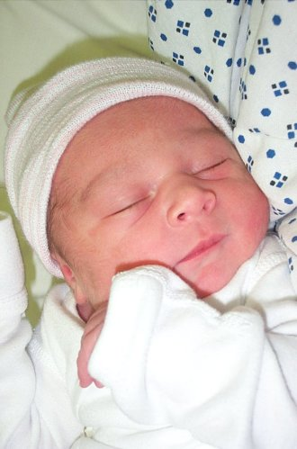

 |
||
|---|---|---|
| Name | Katherine Anika Elsten | |
| Named after | Annette Katherine Elsten (mom) | |
| Almost named | William McCoy | |
| Birth date | March 24, 2002 | |
| Time | 8:19 AM | |
| Place | Plumas District Hospital | |
| Weight | 6lbs 12oz | |
| Height | 20 1/2 inches | |
| Eye color | dark bluish gray | |
| Hair color | black | |
| Birthmarks | "strawberry" on the back of head | |
| Doctor | Ross Morgan | |
| Original due date | March 28, 2002 | |
| Method | Natural | |
| Drugs During Birth | None | |
| labour (hours) | 2 hours 50 minutes |